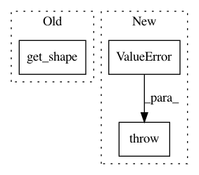

acc533ac66fa4d19420a36006ece53a440d03761,gpflow/conditionals/util.py,,base_conditional,#Any#Any#Any#Any#,10
Before Change
if q_sqrt is not None:
if q_sqrt.get_shape().ndims == 2:
LTA = A * tf.expand_dims(tf.transpose(q_sqrt), 2) // [R, M, N]
elif q_sqrt.get_shape().ndims == 3:
L = tf.matrix_band_part(q_sqrt, -1, 0) // [R, M, M]
A_tiled = tf.tile(tf.expand_dims(A, 0), tf.stack([num_func, 1, 1]))
LTA = tf.matmul(L, A_tiled, transpose_a=True) // [R, M, N]
After Change
A_tiled = tf.tile(tf.expand_dims(A, 0), tf.stack([num_func, 1, 1]))
LTA = tf.matmul(L, A_tiled, transpose_a=True) // [R, M, N]
else: // pragma: no cover
raise ValueError(f"Bad dimension for q_sqrt: {q_sqrt.shape.ndims}")
if full_cov:
fvar = fvar + tf.matmul(LTA, LTA, transpose_a=True) // [R, N, N]
else:
fvar = fvar + tf.reduce_sum(LTA ** 2, 1) // [R, N]
In pattern: SUPERPATTERN
Frequency: 3
Non-data size: 3
Instances
Project Name: GPflow/GPflow
Commit Name: acc533ac66fa4d19420a36006ece53a440d03761
Time: 2018-11-05
Author: art.art.v@gmail.com
File Name: gpflow/conditionals/util.py
Class Name:
Method Name: base_conditional
Project Name: GPflow/GPflow
Commit Name: acc533ac66fa4d19420a36006ece53a440d03761
Time: 2018-11-05
Author: art.art.v@gmail.com
File Name: gpflow/conditionals/util.py
Class Name:
Method Name: fully_correlated_conditional_repeat
Project Name: asyml/texar
Commit Name: 791e7325a985bc8dd1a213c7cd1b1e888f934074
Time: 2018-05-27
Author: zhitinghu@gmail.com
File Name: texar/modules/embedders/embedders.py
Class Name: WordEmbedder
Method Name: __init__